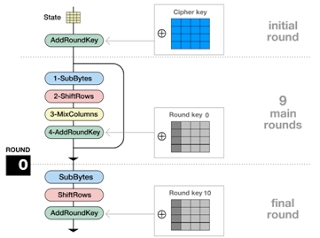

Blog Entries
-

Open Closed Principle
A very important consideration when building software is to write code to produce applications which can adapt when new needs or requirements change (.. which for sure they will ) without affecting the rest of the already implemented functionality. Usually, changes in existing code should be minimized since it is assumed that the existing code is already unit tested and that probably it took a long time to get it correct and bug free.
Read More -

AES ECB basic implementation
The AES algorithm can be implemented following strictly the AES round steps described in my previous post or by using pre-computed lookup tables. This post describes an AES implementation which follows the AES round steps and is based on existing source code developed by karl malbrain. It is written in a very modular way, making it ideal to get to know the algorithm without getting confused by the usage of look up tables. However, this version is aimed to understand the process and has no focus at all in performance optimization. As well the implementation is used to have a starting point to demonstrate how different levels of performance benefits can be achieved by using a modified version of the algorithm. From now on we will refer to this version as AES-B which stands for AES Basic implementation.
Read More -
Scrum
The term agile software development is an oft used buzz-word, but the main idea behind this term is that we expect changes in requirements through-out the development cycle and should anticipate these changes by developing in a way that allows us to respond quickly to changing requirements and conditions.
Read More -

Language Features of Java Generics
One of the main features introduced with Java 2SE 5.0 are generics; which provide the means to create general implementations for different types (a class or an Interface). Think about the possibility of creating a single Generic Stack class for every different type you wish to store, without the need to implement the same Stack functionality for the different types over and over again (StackOfIntegers, StackOfString, StackOfDoubles), just because it will hold elements of different types.
Read More -

What is a Package?
Packages are namespaces that organize a group of related classes and interfaces. Packages can be thought as folders on your computer system. Many projects might contain html pages in one folder, images in anothe , scripts, interfaces and so on.
Read More -

What are Interfaces?
As it was seen methods (behaviors) in objects define their interaction with the outside world. These method's form the interface which as well can interact with the outside world. Imagine the following scenario: You have been using the previous bike object defined before and you are very familiar with how to speedUp, changeGear, changeCadence, applyBrakes and so on. However, your bike is kind of old and you got a brand new bike.
Read More -

StackOverflow & Programmers
One good way to keep yourself updated specially if you are out of university is reading and writing as much code as possible. Two excellent sites I usually peek daily are stackoverflow & programmers
Read More -

What is Inheritance?
Real objects often have a certain amount of common similarities with each other. For example there are many types of Bicycles: mountain bikes, road bikes, tandem bikes and so on.
Read More -

What is a Class?
In our real world we can have many objects all of the same kind. You can think of cars, computers or bicycles. There may be millions of bicycles all of them made with the same characteristics but still each bike represents a different object. In object-oriented terms it is said each bicycle among these million bikes is an instance of the class of object in this case the class Bicycle.
Read More -

What is an Object?
Real world objects vary in complexity for example a lamp might have just two states on and off and two possible behaviors turnOn and turnOff. However, a television might have additional states such as: on, off, currentChannel, currentVolume and behavior: turnOn, turnOff, increaseVolume, decreaseVolume, scanChannel.
Read More -

Object Oriented Programming
As many other people my first contact with programming was by far not an Object Oriented language. In my case my first programming tool was the well remembered “flowchart” (which by the way I think is a great tool to start..) After we developed some logic and understood the very basics of loops, processes and flows then we moved into what it was my first official language which was Pascal, a procedural programming language designed in the late 60's and initially thought as a language to teach students structured programming.
Read More -

Modes of Operations
After explaining the basis of how the AES block cipher works now we’re moving into modes of operations. Basically, a block cipher by itself allows encrypting only a data block of the cipher's block length (in AES 128 bits).
Read More -

Berlin you are AWESOME!
Since a long time ago I wanted to go to Berlin, but for some reason every time I found some spare time I used to end up going to a different city. Finally a few weeks ago Amanda and I decided to go and, I have to say it did not disappoint me at all. It totally fulfilled my expectations (which in my case normally that never happens when I expect alot about something..
Read More -

AES Round Steps
The AES algorithm encrypts data by executing 4 different operations; modifying gradually the state matrix until the ciphertext is obtained. The operations are: AddRoundKey, SubBytes, ShiftRows, MixColumns and an extra operation called the KeySchdule which is in charge to expand the original key for each AES round. This operations are going to be executed N times depending on the key length.
Read More -

Advanced Encryption Standard Algorithm
In the next days I will be writing about the AES algorithm, so I am going to start with a brief historical introduction and basic description of the algorithm before I move into more technical stuff.
Read More